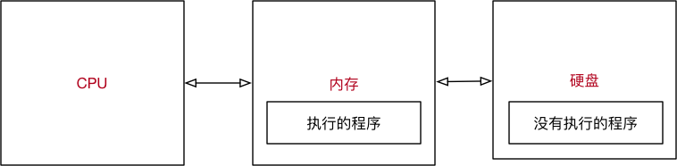
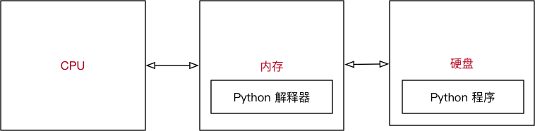

程序执行原理（科普）
目标
- 计算机中的 三大件
- 程序执行的原理
- 程序的作用
01. 计算机中的三大件
计算机中包含有较多的硬件，但是一个程序要运行，有 三个 核心的硬件，分别是：
- CPU
- 中央处理器，是一块超大规模的集成电路
- 负责 处理数据／计算
- 内存
- 临时 存储数据（断电之后，数据会消失）
- 速度快
- 空间小（单位价格高）
- 硬盘
- 永久 存储数据
- 速度慢
- 空间大（单位价格低）
| CPU | 内存 | 硬盘 |
|---|---|---|
 |
 |
思考题
- 计算机中哪一个硬件设备负责执行程序？
- CPU
- 内存 的速度快还是 硬盘 的速度快？
- 内存
- 我们的程序是安装在内存中的，还是安装在硬盘中的？
- 硬盘
- 我买了一个内存条，有 500G 的空间！！！，这句话对吗？
- 不对，内存条通常只有
4G/8G/16G/32G
- 不对，内存条通常只有
- 计算机关机之后，内存中的数据都会消失，这句话对吗？
- 正确
02. 程序执行的原理

- 程序 运行之前，程序是 保存在硬盘 中的
- 当要运行一个程序时
- 操作系统会首先让 CPU 把程序复制到 内存 中
- CPU 执行 内存 中的 程序代码
程序要执行，首先要被加载到内存
2.1 Python 程序执行原理

- 操作系统会首先让 CPU 把 Python 解释器 的程序复制到 内存 中
- Python 解释器 根据语法规则，从上向下 让 CPU 翻译 Python 程序中的代码
- CPU 负责执行翻译完成的代码
Python 的解释器有多大？
- 执行以下终端命令可以查看 Python 解释器的大小
1 | # 1. 确认解释器所在位置 |
提示：建立 软链接 的目的，是为了方便使用者不用记住使用的解释器是 哪一个具体版本
03. 程序的作用
程序就是 用来处理数据 的！
- 新闻软件 提供的 新闻内容、评论…… 是数据
- 电商软件 提供的 商品信息、配送信息…… 是数据
- 运动类软件 提供的 运动数据…… 是数据
- 地图类软件 提供的 地图信息、定位信息、车辆信息…… 是数据
- 即时通讯软件 提供的 聊天信息、好友信息…… 是数据
- ……
3.1 思考 QQ 程序的启动过程
- QQ 在运行之前，是保存在 硬盘 中的
- 运行之后，QQ 程序就会被加载到 内存 中了
3.2 思考 QQ 程序的 登录 过程
- 读取用户输入的 QQ 号码
- 读取用户输入的 QQ 密码
- 将 QQ 号码 和 QQ 密码 发送给腾讯的服务器，等待服务器确认用户信息
思考 1
在 QQ 这个程序将 QQ 号码 和 QQ 密码 发送给服务器之前，是否需要先存储一下 QQ 号码 和 密码?
答案
肯定需要！—— 否则 QQ 这个程序就不知道把什么内容发送给服务器了！
思考 2
QQ 这个程序把 QQ 号码 和 QQ 密码 保存在哪里？
答案
保存在 内存 中，因为 QQ 程序自己就在内存中
思考 3
QQ 这个程序是怎么保存用户的 QQ 号码 和 QQ 密码 的？
答案
- 在内存中为 QQ 号码 和 QQ 密码 各自分配一块空间
- 在 QQ 程序结束之前，这两块空间是由 QQ 程序负责管理的，其他任何程序都不允许使用
- 在 QQ 自己使用完成之前，这两块空间始终都只负责保存 QQ 号码 和 QQ 密码
- 使用一个 别名 标记 QQ 号码 和 QQ 密码 在内存中的位置
- 在程序内部，为 QQ 号码 和 QQ 密码 在内存中分配的空间就叫做 变量
- 程序就是用来处理数据的，而变量就是用来存储数据的